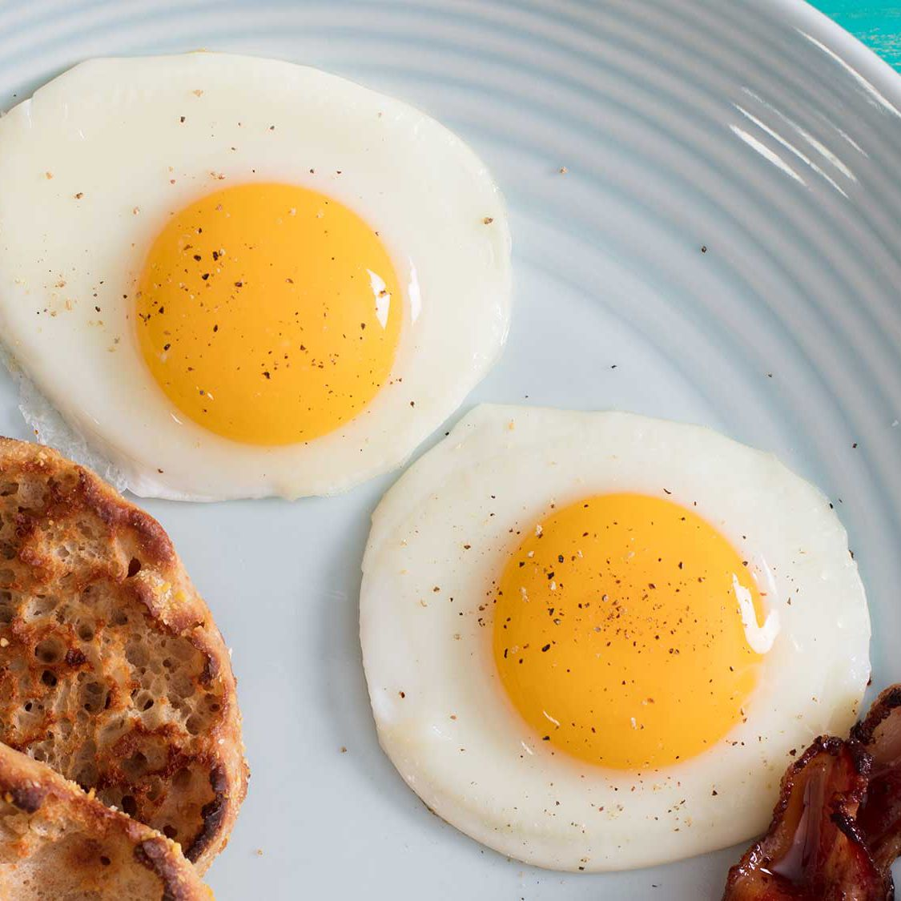

Sunny Side Up Eggs

Simple sunny side up eggs. Nothing much else to say.
Ingredients:
- 1 teaspoon olive oil
- 2 large eggs
- Toast, for serving, optional
- Kosher salt and freshly ground black pepper
Instructions:
- Heat the oil in a medium nonstick skillet over low heat until slightly
shimmering, about 5 minutes.
- Crack an egg into a small ramekin and slowly add it to the skillet; repeat
with the other egg, adding it to the other side of the skillet.
- Cover with a tight lid and cook, uninterrupted, until the whites are
completely set but the yolks are still runny, 2 to 2-1/2 minutes.
- Slide the eggs out of the skillet onto a plate or toast. Season with salt
and pepper.
Home